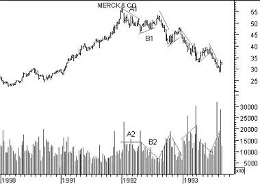

Volume is simply the number of shares (or contracts) traded during a specified time frame (e.g., hour, day, week, month, etc). The analysis of volume is a basic yet very important element of technical analysis. Volume provides clues as to the intensity of a given price move.
Low volume levels are characteristic of the indecisive expectations that typically occur during consolidation periods (i.e., periods where prices move sideways in a trading range). Low volume also often occurs during the indecisive period during market bottoms.
High volume levels are characteristic of market tops when there is a strong consensus that prices will move higher. High volume levels are also very common at the beginning of new trends (i.e., when prices break out of a trading range). Just before market bottoms, volume will often increase due to panic-driven selling.
Volume can help determine the health of an existing trend. A healthy up-trend should have higher volume on the upward legs of the trend, and lower volume on the downward (corrective) legs. A healthy downtrend usually has higher volume on the downward legs of the trend and lower volume on the upward (corrective) legs.
The following chart shows Merck and its volume.
Prices peaked at the end 1991 following a long rally. This was followed by a price decline (trendline "A1"). Notice how volume was relatively high during this price decline (trendline "A2"). The increase in volume during the price decline showed that many investors would sell when prices declined. This was bearish.
Prices then tried to rally (trendline "B1"). However, volume decreased dramatically (trendline "B2") during this rally. This showed that investors were not willing to buy, even when prices were rising. This too, was bearish.
This pattern continued throughout the decline in 1992 and 1993. When prices rallied, they did so on decreased volume. When prices declined, they did so on increased volume. This showed, again and again, that the bears were in control and that prices would continue to fall.